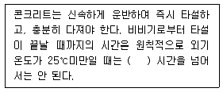
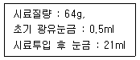
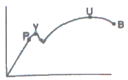
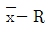
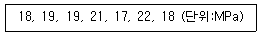
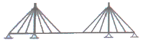
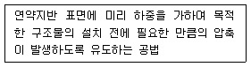
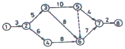
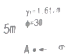

건설재료시험산업기사 (2016-05-08 기출문제)
1과목: 콘크리트공학
1. 콘크리트의 다지기에 사용하는 내부진동기 사용방법의 표준에 대한 설명으로 틀린 것은?
- 2층 이상으로 나누어 타설한 콘크리트에서 내부진동기는 하층의 콘크리트 속으로 들어가지 않도록 한다.
- 내부진동기는 연직으로 찔러 넣으며, 그 간격은 일반적으로 0.5m 이하로 하는 것이 좋다.
- 1개소당 진동시간은 다짐할 때 시멘트 페이스트가 표면 상부로 약간 부상하기 까지 한다.
- 내부진동기는 콘크리트로부터 천천히 빼내어 구멍이 남지 않도록 한다.
(정답률: 78%)

2. 콘크리트를 2층 이상으로 나누어 타설할 경우, 상층의 콘크리트 타설은 원칙적으로 하층의 콘크리트가 굳기 시작하기 전에 해야 한다. 이때 외기온도가 25℃이하인 경우 이어치기 허용시간 간격의 표준으로 옳은 것은?
- 1.0시간
- 1.5시간
- 2.0시간
- 2.5시간
(정답률: 54%)
3. 다음 중 콘크리트 압축강도에 영향을 미치는 요인에 속하지 않는 것은?
- 재하속도
- 공시체 가압면의 표면상태
- 공시체의 크기와 모양
- 공시체에 남아있는 표면수
(정답률: 65%)
4. 골재의 단위부피가 780ℓ인 콘크리트에서 잔골재율이 39%이고, 잔골재의 밀도가 2.62g/cm3이면, 단위 잔골재량은 얼마인가?
- 545kg
- 597kg
- 797kg
- 845kg
(정답률: 75%)
5. 무근 콘크리트 배합설계시 단면이 큰 경우 슬럼프의 표준값으로 옳은 것은?
- 20~50mm
- 50~100mm
- 100~150mm
- 150~200mm
(정답률: 60%)
6. 슬럼프 시험에 대한 설명으로 틀린 것은?
- 콘크리트 시료를 콘 용적의 약 1/3씩 되도록 3층으로 나누어 채우고 각 층을 다짐대로 25회씩 골고루 다진다.
- 몰드에 채우기 시작해서 벗길 때까지 전 작업을 중단없이 3분 30초 내에 끝마쳐야 한다.
- 슬럼프 콘은 밑면의 안지름이 200mm, 윗면의 안지름이 100mm, 높이가 300mm인 금속제로 한다.
- 다짐봉은 지름이 16mm이고 길이 500~600mm인 강 또는 금속제 원형봉으로 그 앞 끝을 반구 모양으로 한다.
(정답률: 90%)
7. 다음 중 콘크리트의 반죽질기 시험방법에 속하지 않는 것은?
- 슬럼프시험
- 마샬시험
- 구관입시험
- 비비시험
(정답률: 56%)
8. 일평균 기온이 15℃이상이고 조강 포틀랜드 시멘트를 사용한 일반 콘크리트의 경우 습윤양생기간의 표준으로 옳은 것은?
- 3일
- 5일
- 7일
- 9일
(정답률: 75%)
9. 한중콘크리트에 대한 설명으로 옳은 것은?
- 저열시멘트를 사용하는 것을 표준으로 한다.
- 재료를 가열할 경우, 물 또는 시멘트를 가열하는 것으로 한다.
- 물-결합재비가 작아지기 때문에, AE감수제 사용을 가급적 피해야 한다.
- 타설할 때의 콘크리트 온도는 구조물의 단면치수, 기상조건 등을 고려하여 5~20℃의 범위에서 정한다.
(정답률: 55%)
10. 해수의 작용을 받는 콘크리트에서 단위 시멘트량의 최소값(kg/m3)은? (단, 굵은골재의 최대치수는 40mm이며, 물보라 지역 및 해상 대기중인 경우이다.)
- 240
- 270
- 300
- 330
(정답률: 35%)
11. 콘크리트용 재료에 염화물이 많이 함유되면 구조물에 주로 어떤 현상이 발생하는가?
- 일정 응력이 장시간 작용하면 소성적 변형이 급격히 증가한다.
- 철근과 콘크리트 사이에 수막이 형성되어 부착강도가 향상된다.
- 거푸집과 콘크리트 사이에 압력이 증가되어 양생이 지연된다.
- 콘크리트 속의 강재 부식이 촉진되어 구조물이 조기에 열화한다.
(정답률: 65%)
12. 숏크리트 작업에 대한 설명으로 틀린 것은?
- 숏크리트는 빠르게 운반하고, 급결제를 첨가한 후는 바로 뿜어붙이기 작업을 실시하여야 한다.
- 숏크리트는 뿜어붙인 콘크리트가 흘러내지 않는 범위의 적당한 두께를 뿜어붙이고, 소정의 두께가 될 때까지 반복해서 뿜어붙여야 한다.
- 숏크리트 작업에 반발량이 최소가 되도록 하고, 리바운드된 재료는 즉시 다시 혼합하여 사용하여야 하낟.
- 강재 지보재를 설치한 곳에 숏크리트를 실시할 경우에는 뿜어붙일 면과 강재 지보재와의사이에 공극이 생기지 않도록 뿜어붙인다.
(정답률: 75%)
13. 굳지 않은 콘크리트에서 일어나는 재료분리 원인으로 틀린 것은?
- 굵은골재의 최대치수가 작은 경우
- 단위골재량이 너무 많은 경우
- 단위수량이 너무 많은 경우
- 입자가 거친 잔골재를 사용한 경우
(정답률: 62%)
14. 콘크리트 운반에 대한 아래표의 ( )에 알맞은 수치는

- 1
- 1.5
- 2
- 2.5
(정답률: 61%)
15. 프리텐션 방식의 프리스트레스트 콘크리트에서 프르스트레싱을 할 때의 콘크리트 압축강도는 최소 얼마 이상이어야 하는가? (단, 실험이나 기존의 적용 실적 등을 통해 안전성이 증명된 경우는 제외)
- 24MPa
- 27MPa
- 30MPa
- 35MPa
(정답률: 69%)
16. 굵은골재의 최대치수, 잔골재율, 잔골재의 입도, 반죽질기 등에 따라 마무리하기 쉬운 정도를 나타내는 굳지 않은 콘크리트의 성질은?
- 성형성(plasticity)
- 내구성(durability)
- 워커빌리티(workability)
- 피니셔빌리티(finishability)
(정답률: 75%)
17. 콘크리트 구조물의 인장측에 폭 0.5mm 정도의 균열이 발생되었다. 이 균열을 보수하는 가장 적당한 방법은?
- 에폭시 주입공법
- 단면 증설 공법
- 강판 접착 공법
- 프리스트레스 도입공법
(정답률: 62%)
18. 콘크리트내 공기량에 대한 설명으로 틀린 것은?
- 적당량의 연행공기를 갖고 있는 콘크리트는 동결융해에 대한 저항성이 크다.
- AE공기는 워커빌리티를 저하시킨다.
- 공기량이 증가하면 강도는 감소한다.
- 적당한 공기량은 4~7% 정도이다.
(정답률: 71%)
19. 팽창콘크리트에 대한 설명으로 틀린 것은?
- 콘크리트의 팽창률은 일반적으로 재령 28일에 대한 시험값을 기준으로 한다.
- 팽창콘크리트의 품질은 원칙적으로 팽창률 및 압축강도의 시험값에 의해 확인하여야 한다.
- 팽창재는 원칙적으로 다른 재료를 투입할 때 동시에 믹서에 투입한다.
- 포대 팽창재를 저장하고자 할 때 포대 팽창재는 12포대 이하로 쌓아야 한다.
(정답률: 41%)
20. 압축강도시험의 기록이 없는 현장에서 설계기준압축강도가 21MPa인 콘크리트를 제작하기 위한 배합강도로 옳은 것은?
- 28MPa
- 29.5MPa
- 31MPa
- 32.5MPa
(정답률: 64%)
2과목: 건설재료 및 시험
21. 다음 중 천연 아스팔트의 종류가 아닌 것은?
- Rock asphalt
- Lake asphalt
- Straight asphalt
- Sand asphalt
(정답률: 77%)
22. KS F 2564(콘크리트용 강섬유)의 규정에는 강섬유를 소재에 의한 제작방법에 따라 4가지로 구분하고 있다. 다음 중 강섬유의 종류가 아닌 것은?
- 와이어 섬유
- 이형 절단 시트 섬유
- 아라미드 섬유
- 용융 추출 섬유
(정답률: 64%)
23. 아스팔트의 연소점에 대한 설명으로 가장 적합 한 것은?
- 101.3kPa의 대기압에서 시료의 증기에 불꽃을 가까이 대었을 때 점화되고 규정 조건하에서 액체 표면에 점화가 일어나는 시료의 최저온도
- 101.3kPa의 대기압에서 시료의 증기에 불꽃을 가까이 대었을 때, 규정조건하에서 기름의 증기와 공기의 혼합기체가 연속하여 5초 이상 연소하는 최저 시료 온도
- 101.3kPa의 대기압에서 시료의 증기에 불꽃을 가까이 대었을 때, 규정조건하에서 기름의 증기와 공기의 혼합기체가 연속하여 10초 이상 연소하는 최저 시료 온도
- 101.3kPa의 대기압에서 시료의 증기에 불꽃을 가까이 대었을 때, 규정조건하에서 기름의 증기와 공기의 혼합기체가 연속하여 20초 이상 연소하는 최저 시료 온도
(정답률: 58%)
24. 목재의 기건 상태에서의 함수율은 보통 얼마 정도인가?
- 5~10%
- 12~18%
- 21~26%
- 28~35%
(정답률: 63%)
25. 아래와 같은 조건으로 르샤틀리에 플라스크를 이용하여 구한 시멘트 비중은?

- 3.02
- 3.12
- 3.17
- 3.20
(정답률: 72%)
26. 긴급 또는 한중콘크리트 공사에 쓰면 가장 유효한 시멘트는?
- 중용열 포틀랜드 시멘트
- 포졸란 시멘트
- 저열 포틀랜드 시멘트
- 알루미나 시멘트
(정답률: 54%)
27. 혼화재료에 대한 설명 중 틀린 것은?
- 혼화재료는 혼화재와 혼화제로 구분한다.
- 일반적으로 시멘트 질량의 5%정도 이상 사용하는 것은 혼화재이다.
- 일반적으로 혼화제 사용량은 콘크리트의 배합계산에서 고려하여야 한다.
- 혼화재료는 콘크리트의 제성질을 개선, 향상시킬 목적으로 사용한다.
(정답률: 55%)
28. 조립률이 2.7인 잔골재와 7.3인 굵은골재를 1:1.5의 무게비로 섞을 때 혼합골재의 조립률은?
- 5.46
- 4.46
- 3.46
- 2.46
(정답률: 75%)
29. 아스팔트 신도시험(ductility test)에서 시험온도와 인장속도의 조합이 옳은 것은?
- 20±0.5℃, 5±0.25cm/min
- 21±2℃, 3±0.25cm/min
- 25±0.5℃, 5±0.25cm/min
- 21±2℃, 1±0.25cm/min
(정답률: 60%)
30. 그림과 같은 강(鋼)의 응력-변형 곡선에서 항복점은?

- P
- Y
- U
- B
(정답률: 75%)
31. 석재에 대한 설명으로 틀린 것은?
- 밀도가 클수록 강도가 크다.
- 일반적으로 화성암이 수성암보다 강도가 높다.
- 석재의 종류에 따라 밀도가 다르다.
- 흡수율이 높으면 내구성이 크다.
(정답률: 68%)
32. 풍화한 시멘트의 특성을 설명한 것으로 틀린 것은?
- 강열감량이 증가한다.
- 응결이 지연된다.
- 강도의 발현이 저하된다.
- 비중이 증가한다.
(정답률: 76%)
33. 다음 중 콘크리트용 골재시험과 관계없는 것은?
- 팽창도시험
- 로스앤젤레스 마모시험
- 체가름시험
- 유기불순물시험
(정답률: 51%)
34. AE제를 사용하면 일반적으로 콘크리트의 워커빌리티를 증가시킨다고 알려져 있다. 다음 중에서 이에 대한 이유로 가장 적당한 것은?
- 연행공기가 시멘트, 골재입자 주위에서 볼 베어링과 같은 작용을 함으로써 워커빌리티가 개선된다.
- 시멘트의 응결을 극도로 촉진하여 워커빌리티가 개선된다.
- 시멘트 입자의 팽창작용에 의해 워커빌리티가 개선된다.
- 시멘트의 응결ㆍ경화를 지연시킴으로써 워커빌리티가 개선된다.
(정답률: 59%)
35. 다음 중 포졸란 작용이 있는 혼화재가 아닌 것은?
- 플라이 애시
- 규조토
- 실리카 퓸
- 팽창재
(정답률: 43%)
36. 다음 중 폭약을 기폭시키기 위해 사용하는 기폭용품이 아닌 것은?
- 질화납
- 도화선
- 도폭선
- 뇌관
(정답률: 75%)
37. 합판에 대한 설명으로 틀린 것은?
- 목재를 톱으로 켜서 얇게 자른 단판(veneer)을 3매, 5매, 7매 등의 홀수로 엇갈리게 겹친 것으로 팽창과 수축이 작다.
- 합판은 무늬가 아름답고 열과 음향의 전도율이 작으며 내구성, 내습성이 크나 목재의 결점을 제거하기 어려운 단점을 갖는다.
- 합판의 제조방법에 로터리 베니어(rotary cut veneer), 슬라이스트 베니어(sliced veneer), 소드 베니어(sawed veneer)가 있다.
- 합판의 제조방법 중에서 생산능률이 높고 가장 널리 사용되는 것이 로터리 베니어(rotary cut veneer)이다.
(정답률: 74%)
38. 다음 화약류 중에서 폭발력이 가장 큰 것은?
- 흑색화약
- 무연화약
- 다이너마이트
- 칼릿
(정답률: 62%)
39. 시멘트 클링커 화합물의 특성에 대한 설명으로 틀린 것은?
- C3S는 C2S에 비하여 수화열이 크고 초기강도가 크다.
- C2는 수화열이 작으며 장기강도발현성과 화학저항성이 우수하다.
- C3A는 수화속도가 매우 빠르지만 발열량과 수축이 매우 적다.
- C4AF는 화학저항성이 양호해서 내황산염포틀랜드시멘트에 많이 함유되어 있다.
(정답률: 56%)
40. 다음 중 화성암에 속하지 않는 것은?
- 화강암
- 섬록암
- 응회암
- 현무암
(정답률: 61%)
3과목: 건설시공학
41. 콘크리트 압축강도 시험결과가 아래의 표와 같을 경우,

관리도 작성을 위한 R은?
- 5MPa
- 7MPa
- 9MPa
- 10MPa
(정답률: 44%)
42. 다음 중 탬핑 로울러의 종류에 속하지 않는 것은?
- sheep’s foot roller
- gird roller
- tapper foot roller
- tire roller
(정답률: 69%)
43. 다음의 말뚝 중에서 항타기를 사용하지 않는 말뚝은 어느 것인가?
- 나무 말뚝
- RC 말뚝
- H형강 말뚝
- Benoto 말뚝
(정답률: 61%)
44. PERT기법에 의한 공정관리에서 어떤 작업의 정상적인 소요일수는 10일이며, 가장 빨리 끝낼 경우 8일이 소요되고 아무리 늦어도 12일 이내 에는 끝낼 수 있을 경우 이 작업의 기대 소요일 수는?
- 8일
- 9일
- 10일
- 11일
(정답률: 37%)
45. 교량에 가해지는 하중을 케이블과 주탑을 통하여 지반으로 전달시키는 교량으로서 아래의 그림과 같은 형태의 교량을 무엇이라 하는가?

- 사장교
- 현수교
- 거더교
- 트러스교
(정답률: 77%)
46. 교량을 크게 상부구조와 하부구조로 나눌 경우 다음 중 교량의 상부구조에 해당하지 않는 것은?
- 주형
- 브레이싱
- 교갹
- 받침부
(정답률: 82%)
47. 토공에서 시공기면을 결정할 때 고려하여야 할 사항으로 틀린 것은?
- 절ㆍ성토량의 균형으로 토공량이 최소가 되게 한다.
- 가까운 곳에 토취장과 토사장을 설치하여 운반거리를 짧게 한다.
- 부대구조물이 크고 법면의 연장이 크게 되도록 하여야 하낟.
- 암석굴착은 비용 부담이 크므로 적게 한다.
(정답률: 67%)
48. 리퍼로 암석을 파쇄하면서 동시에 도저 작업을 실시하고자 한다. 1시간당 리핑작업량이 120m3/h이고, 1시간당 도저의 작업량이 40m3/h일 때 조합작업의 1시간당 작업량은?
- 25m3/h
- 30m3/h
- 65m3/h
- 80m3/h
(정답률: 54%)
49. 아래의 표에서 설명하는 연약지반 개량공법은?

- 샌드드레인 공법
- 프리로딩 공법
- 바이브로 플로테이션 공법
- 생석회 말뚝 공법
(정답률: 40%)
50. 기계에 의한 터널 굴착방법 중 TBM(Tunnel boring machine)공법의 특징으로 설명한 것으로 틀린 것은?
- 굴착이 연속적으로 시공되므로 공사기간을 짧게 할 수 있다.
- 토질에 관계없이 시공이 가능하며, 토질변화에 대한 적응성이 좋다.
- 주변 암반에 대한 이완이 비교적 적다.
- 소음, 진동이 적고 여굴의 발생이 적다.
(정답률: 65%)
51. 간선 접수거의 연장을 작게 또는 배수구의 수가 1개 정도로서 습지대에 설치하는 암거 배열 방식은?
- 집단식 배열 방식
- 차단식 배열 방식
- 어골식 배열 방식
- 빗식 배열 방식
(정답률: 76%)
52. 그래브 준설선(Grab Dredger)에 대한 다음 설명 중 옳지 않은 것은?
- 대선위에 트램셀의 일종을 달아 수중굴착을 한다.
- 대규모의 준설에 적합하다.
- 기계가 간단하고 건조비가 싸다.
- 준설깊이의 조절이 비교적 용이하다.
(정답률: 42%)
53. 말뚝에 작용하는 부마찰력을 감소시키기 위한 대책으로 틀린 것은?
- 말뚝 표면에 역청재를 도포한다.
- 군말뚝으로 시공한다.
- 표면적이 큰 말뚝으로 시공한다.
- 말뚝 직경보다 약간 큰 케이싱을 박거나 이중관말뚝을 시공한다.
(정답률: 69%)
54. 댐의 부속설비 중 상하류면의 수위차를 이용한 것으로 동일 단면에서는 자유월류의 경우보다 다량의 물을 배출시킬 수 있는 여수로(spill way)는?
- 사이펀여수로
- 슈트식여수로
- 그로울리홀여수로
- 측수로여수로
(정답률: 61%)
55. 아스팔트 포장 시공에서 노상 위에 포장하는 것으로 윤하중을 고르게 분포시키는 층을 무엇이라 하는가?
- 중간층
- 차단층
- 표층
- 보조기층
(정답률: 47%)
56. 노상이나 노반의 다짐이 완료되면 로울러나 재하된 덤프트럭을 주행시켜 침하량을 측정하는 방법은?
- 프루프롤링(proof rolling)
- 히터플레이너(heater planer)
- 일래스타이트(elastite)
- 마아샬 안정도시험
(정답률: 57%)
57. 다음 net work에서 공사에 필요한 소요 일수는?

- 25일
- 26일
- 27일
- 28일
(정답률: 49%)
58. 강제의 원통을 땅속으로 압입하여 막장의 토사를 밀면서 앞부분은 전진시키고, 후방에서 조립 된 아치를 1차 라이닝으로 하는 터널 굴진공법은?
- NATM공법
- 침매공법
- 케이슨공법
- 쉴드공법
(정답률: 62%)
59. 준설한 토사를 매립에 이용하는 경우 가장 적달한 준설선은?
- 그래브 준설선(grab dredger)
- 펌프 준설선(pump dredger)
- 버킷 준설선(bucket dredger)
- 디퍼 준설선(dipper dredger)
(정답률: 64%)
60. 성토공사 중 시험성토에 의한 현장다짐 시험을 시행하는 경우 그 시험의 목적과 가장 거리가 먼 것은?
- 다짐기계의 선정
- 시공함수비 결정
- 다짐횟수의 결정
- 토적곡선 작성
(정답률: 52%)
4과목: 토질 및 기초
61. 말뚝기초의 부의 주면마찰력에 대한 설명으로 잘못된 것은?
- 말뚝 선단부에 큰 압력부담을 주게 된다.
- 연약지반에 말뚝을 박고 그 위에 성토를 하였을 때 발생한다.
- 말뚝 주위의 흙이 말뚝을 아래 방향으로 끄는 힘을 말한다.
- 부의 주면마찰력이 일어나면 지지력은 증가한다.
(정답률: 53%)
62. 그림과 같은 지반에서 A점의 주동에 의한 수평방향의 전응력 σh는 얼마인가?

- 8.0 t/m2
- 1.65 t/m2
- 2.67 t/m2
- 4.84 t/m2
(정답률: 34%)
63. 다음 설명 중 동상(凍上)에 대한 대책으로 틀린 것은?
- 지하수위와 동결 심도 사이에 모래, 자갈층을 형성하여 모세관 현상으로 인한 물의 상승을 막는다.
- 동결 심도 내의 silt질 흙을 모래나 자갈로 지환한다.
- 동결 심도 내의 흙에 염화칼슘이나 염화나트륨 등을 섞어 빙점을 낮춘다.
- 아이스 렌스(ice lense)형성이 될 수 있도록 충분한 물을 공급한다.
(정답률: 70%)
64. 연약지반 개량공법 중 프리로딩(preloading)공법은 다음 중 어떤 경우에 채용하는가?
- 압밀계수가 작고 점성토층의 두께가 큰 경우
- 압밀계수가 크고 점성토층의 두께가 얇은 경우
- 구조물 공사기간에 여유가 없는 경우
- 2차 압밀비가 큰 흙의 경우
(정답률: 48%)
65. 점토층이 소정의 압밀도에 도달 소요시간이 단면배수일 경우 4년이 걸렸다면 양면배수 일 때는 몇 년이 걸리겠는가?
- 1년
- 2년
- 4년
- 16년
(정답률: 51%)
66. 테르쟈기(Terazghi) 압밀이론에서 설정한 가정으로 틀린 것은?
- 흙은 균질하고 완전히 포화되어 있다.
- 흙입자와 물의 압축성은 무시한다.
- 흙속의 물의 이동은 Darcy의 법칙을 따르며 투수계수는 일정하다.
- 흙의 간극비는 유효응력에 비례한다.
(정답률: 54%)
67. 토질 조사 방법 중 Sounding에 대한 설명으로 옳은 것은?
- 표준관입시험(S.P.T)은 정적인 Sounding방법이다.
- Sounding은 Boring이나 시굴보다도 확실하게 지반구성을 알 수 있다.
- Sounding은 원위치 시험으로서 의의가 있으며 에비조사에 많이 사용된다.
- 동적인 Sounding 방법은 주로 점성토 지반에서 사용된다.
(정답률: 49%)
68. 도로포장 두께 설계시 필요한 시험은?
- 표준관입시험
- CBR 시험
- 콘 관입시험
- 현장베인시험
(정답률: 67%)
69. 내부 마찰각이 영(零, zero)인 점토질 흙의 일축압축 시험시 압축 강도가 4kg/cm2이었다면 이 흙의 점찰력은?
- 1kg/cm2
- 2kg/cm2
- 3kg/cm2
- 4kg/cm2
(정답률: 63%)
70. 비중 2.65, 간극률 50%인 경우에 Quick Sand현상을 일으키는 한계 동수 경사는?
- 0.325
- 0.825
- 0.512
- 1.013
(정답률: 67%)
71. 어떤 흙의 건조단위중량 γd=1.65g/cm3 이고 중은 2.73일 때 이 흙의 간극률은?
- 31.2%
- 35.5%
- 39.4%
- 42.6%
(정답률: 53%)
72. 다음 중 직접전단시험의 특징이 아닌 것은?
- 배수조건에 대한 완벽한 조절이 가능하다.
- 시료의 경계에 응력이 집중된다.
- 전단면이 미리 정해진다.
- 시험이 간단하고 결과 분석이 빠르다.
(정답률: 41%)
73. 어떤 시료가 조밀한 상태에 있는가, 느슨한 상태에 있는가를 나타내는 데 쓰이며, 주로 모래와 같은 조립토에서 사용되는 것은?
- 상대밀도
- 건조밀도
- 포화밀도
- 수중밀도
(정답률: 65%)
74. 연약지반개량공사에서 성토하중에 의해 압밀된 후 다시 추가하중을 재하한 직후의 안정검토를 할 경우 삼축압축시험중 어떠한 시험이 가장 좋은가?
- CD시험
- UU시험
- CU시험
- 급속전단시험
(정답률: 66%)
75. 지름 30cm인 재하판으로 측정한 지지력계수 K30=6.6kg/cm3일 때 지름 75cm인 재하판의 지지력계수 K75은?
- 3.0kg/cm3
- 3.5kg/cm3
- 4.0kg/cm3
- 4.5kg/cm3
(정답률: 34%)
76. 말뚝의 정재하시험에서 하중 재하방법이 아닌 것은?
- 사하중을 재하하는 방법
- 반복하중을 재하하는 방법
- 반력말뚝의 주변 마찰력을 이용하는 방법
- Earth Anchor의 인발저항력을 이용하는 방법
(정답률: 41%)
77. 다음 중 현장 타설 콘크리트 말뚝기초 공법이 아닌 것은?
- 프렌키(Franky) 말뚝공법
- 레이몬드(Raymond) 말둑공법
- 페데스탈(Pedestal) 말뚝공법
- PHC 말뚝공법
(정답률: 52%)
78. 흙의 다짐효과에 대한 설명으로 옳은 것은?
- 부착성이 양호해지고 흡수성이 증가한다.
- 투수성이 증가한다.
- 압축성이 커진다.
- 밀도가 커진다.
(정답률: 30%)
79. 어떤 점토를 연직으로 4m 굴착하였다. 이 점토의 일축압축강도가 4.8t/m2이고, 단위중량이 1.6t/m3일 때 굴착고에 대한 안전율은 얼마인가?
- 1.2
- 1.5
- 2.0
- 3.0
(정답률: 46%)
80. 평균 기온에 따른 동결지수가 520℃ days였다. 이 지방의 정수 C=4일 때 동결깊이는? (단, 테라다공식을 이용)
- 22.8cm
- 45.6cm
- 91.2cm
- 130cm
(정답률: 62%)